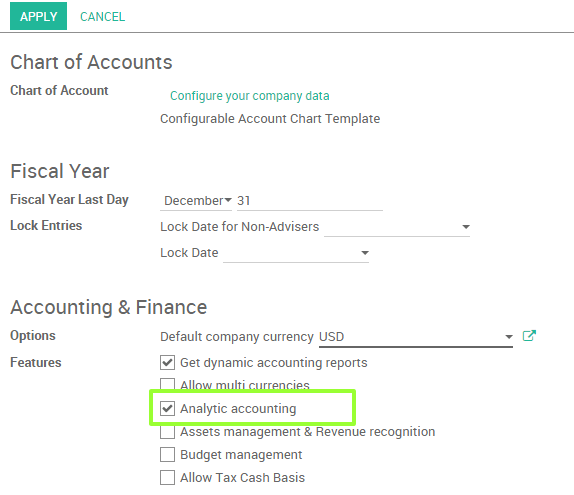

The analytic accounting can be used for several purposes:
- analyse costs of a company
- reinvoice time to a customer
- analyse performance of a service or a project
To manage analytic accounting, you have to activate it in :
To illustrate analytic accounts clearly, you will follow three use cases, each in one of three different types of company:
- Industrial company: Costs Analyse
- Law Firm: reinvoice spent hours
- IT/Services Company: performance analysis
Case 1: Industrial company: Costs Analyse
In industry, you will often find analytic charts of accounts structured into departments and products the company itself is built on.
The objective is to examine the costs, sales and margins by department/resources and by product. The first level of the structure comprises the different departments, and the lower levels represent the product ranges the company makes and sells.
Analytic Chart of Accounts for an Industrial Manufacturing Company:
- Marketing Department
- Commercial Department
- Administration Department
- Production Range 1
- Production Range 2
In daily use, it is useful to mark the analytic account on each purchase invoice. When the invoice is approved, it will automatically generate the entries for both the general and the corresponding analytic accounts. For each entry on the general accounts, there is at least one analytic entry that allocates costs to the department which incurred them.
Here is a possible breakdown of some general accounting entries for the example above, allocated to various analytic accounts:
| General accounts | Analytic accounts | |||||
|---|---|---|---|---|---|---|
| Title | Account | Debit | Credit | Account | Value | |
| Purchase of Raw Material | 2122 | 1500 | Production Range 1 | -1 500 | ||
| Subcontractors | 2122 | 450 | Production Range 2 | -450 | ||
| Credit Note for defective materials | 2122 | 200 | Production Range 1 | 200 | ||
| Transport charges | 2122 | 450 | Production Range 1 | -450 | ||
| Staff costs | 2121 | 10000 | Marketing | -2 000 | ||
| Commercial | -3 000 | |||||
| Administrative | -1 000 | |||||
| Production Range 1 | -2 000 | |||||
| Production Range 2 | -2 000 | |||||
| PR | 2122 | 450 | Marketing | -400 |
The analytic representation by department enables you to investigate the costs allocated to each department in the company. The analytic chart of accounts shows the distribution of the company's costs using the example above:

In this example of a hierarchical structure in Odoo, you can analyse not only the costs of each product range, but also the costs of the whole production. A report that relates both general accounts and analytic accounts enables you to get a breakdown of costs within a given department.

The examples above are based on a breakdown of the costs of the company. Analytic allocations can be just as effective for sales. That gives you the profitability (sales - costs) of different departments.
This analytic representation by department is generally used by trading companies and industries.
A variantion of this, is not to break it down by sales and marketing departments, but to assign each cost to its corresponding product range. This will give you an analysis of the profitability of each product range.
Choosing one over the other depends on how you look at your marketing effort. Is it a global cost allocated in some general way, or is each product range responsible for its own marketing costs?
Case 2: Law Firm: costs of human resources?
Law firms generally adopt management by case, where each case represents a current client file. All of the expenses and products are then attached to a given file/analytic account.
A principal preoccupation of law firms is the invoicing of hours worked, and the profitability by case and by employee.
Mechanisms used for encoding the hours worked will be covered in detail in timesheet documentation. Like most system processes, hours worked are integrated into the analytic accounting. In the employee form, specify the cost of the employee. The hourly charge is a function of the employee's cost.
So a law firm will opt for an analytic representation which reflects the management of the time that employees work on the different customer cases.
Billing for the different cases is a bit unusual. The cases do not match any entry in the general account nor do they come from purchase or sales invoices. They are represented by the various analytic operations and do not have exact counterparts in the general accounts. They are calculated on the basis of the hourly cost per employee.
At the end of the month when you pay salaries and benefits, you integrate them into the general accounts but not in the analytic accounts, because they have already been accounted for in billing each account. A report that relates data from the analytic and general accounts then lets you compare the totals, so you can readjust your estimates of hourly cost per employee depending on the time actually worked.
The following table shows an example of different analytic entries that you can find for your analytic account:
| Title | Account | Amount | General Account | Debit | Credit | |
|---|---|---|---|---|---|---|
| Study the file (1 h) | Case 1.1 | -15 | ||||
| Search for information (3 h) | Case 1.1 | -45 | ||||
| Consultation (4 h) | Case 2.1 | -60 | ||||
| Service charges | Case 1.1 | 280 | 705 – Billing services | 280 | ||
| Stationery purchase | Administrative | -42 | 601 – Furniture purchase | 42 | ||
| Fuel Cost -Client trip | Case 1.1 | -35 | 613 – Transports | 35 | ||
| Staff salaries | 6201 – Salaries | 3 000 |
Such a structure allows you to make a detailed study of the profitability of various transactions.
For more details about profitablity, please read the following document: How to track costs of human resources with timesheets?
But analytical accounting is not limited to a simple analysis of the profitability of different customer. The same data can be used for automatic recharging of the services to the customer at the end of the month. To invoice customers, just link the analytic account to a sale order and sell products that manage timesheet or expenses .
Case 3: IT Services Company: perfomance analysis
Most IT service companies face the following problems:
- project planning,
- invoicing, profitability and financial follow-up of projects,
- managing support contracts.
To deal with these problems, you would use an analytic chart of accounts structured by project and by sale order.
The management of services, expenditures and sales is similar to that presented above for lawyers. Invoicing and the study of profitability are also similar.
But now look at support contracts. These contracts are usually limited to a prepaid number of hours. Each service posted in the analytic accounts shows the remaining hours of support. To manage support contracts, you would create a product configured to invoice on order and link the sale order to an analytic account
In Odoo, each analytic line lists the number of units sold or used, as well as what you would usually find there – the amount in currency units (USD or GBP, or whatever other choice you make). So you can sum the quantities sold and used on each sale order to determine whether any hours of the support contract remain.
Conclusion
Analytic accounting helps you to analyse costs and revenues whatever the use case. You can sell or purchase services, track time or analyse the production performance.
Analytic accounting is flexible and easy to use through all Odoo applications (sales, purchase, timesheet, production, invoice, …).